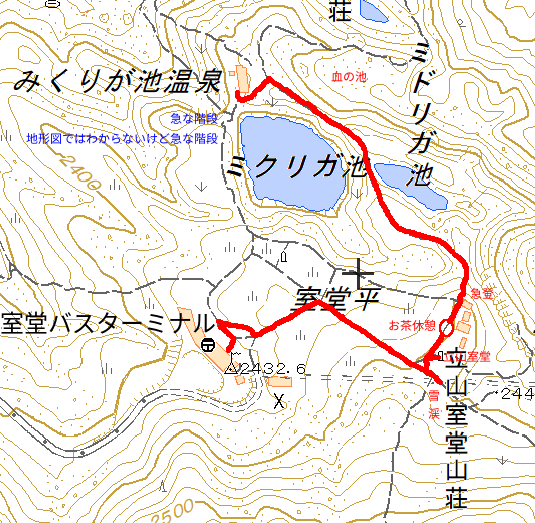

2018 年
08 月 04 日 ( 土 )
立山室堂平
今回の旅行で撮った写真を入れているフォルダーを漁っていて、なんで朝イチでこの写真を撮ったのか思い出せない写真がありました。
上の写真がそうなんですが、じっくり見ていて思い出しました。この写真はみくりが池温泉前のテラスで撮ったものなのですが (割と早く目が覚めてカメラを持ってテラスで涼んでいたのでした)、よくよく見ると富山平野が写っているのですね。富山平野が見えるやーん、と思わずシャッターを押したのがこの 1 枚なのでした。
さて、朝ご飯です。みくりが池温泉の朝ご飯はビュッフェスタイルです。結構メニューが沢山あって全部は取りきれません。なので自分が気に入ったものをピックアップして食べることになります。ビュッフェスタイルですが残念ながらパンはありません。ご飯とお味噌汁です。これはこれでいいものですしパンが出てくるようならそれはもう山小屋ではなくホテルです。
さて、この日の予定ですが午前中は私と娘はみくりが池を時計回りにまわり、立山室堂山荘を経由して室堂ターミナル (下の地図の郵便局の記号のある建物) まで本当に階段無しで歩けるのか偵察に行きます。距離は昨日歩いた距離の約 2.5倍の距離になります。
歩いたルートは下の地図の赤線部分になります。

この地図は、国土地理院長の承認を得て、同院発行の電子地形図(タイル)を複製したものです。
(承認番号 平30情複、 第526号)
なおこの地図を複製する場合には、国土地理院の長の承認を得なければなりません。
国土地理院
昨日歩いたルートの約 2.5 倍の距離があることと立山室堂山荘手前に標高差 10m の急坂があるということで、無理に妻は誘いませんでした。ですが途中のベンチでコーヒーを淹れて休憩しながら、また道中で写真を撮りながら行こうかと娘と話していると妻も行きたくなってきたらしく、行けるところまで行き無理がありそうなら妻は引き返すということになりました。なんか妻がたった 1 人で宿に戻る姿を想像すると胸が痛みましたが、室堂ターミナルまで階段無しで行けるかどうか偵察しないわけにはいかないので 3 人で出発しました。
みくりが池温泉の前の階段は昨日スタッフの方が言っていたとおりわずか 20m ほどでおわりました。坂を登りきって少し進んだところで雄山にカメラを向けました。いい天気で日焼けしそうです。
なおもしばらく進むと血の池が見えるところに来ました。早速カメラを向けます。
ですがなんとなく写真としてはイマイチです。なので縦構図でも撮ってみました。
やはりそれでもイマイチです。前景の処理の問題なのかなぁと思いながら、帰宅してからなんですが娘がスマホ撮った血の池の写真を見せてもらいました。下の写真がそうです。
私の撮ったのよりいい感じに撮れています。この写真を見て私の撮った写真がイマイチの理由がわかりました。。
私って撮りたいものを画面いっぱいに写す傾向があるのですね、なんでも。人でもそうですし、風景でもそうです。なので血の池を撮りたいとなったら血の池をなるべく画面で大きく占めるように撮ってしまうんです。癖ですね。
そのため前景と中景の血の池だけが画面に占められて画面の構成がバランスを欠いてしまう結果になっているのです。ところが娘の写真はスマホで撮っているのでズームがなく偶然そうなっているのですが、前景の地面や草や岩、中景の血の池、遠景の立山の 3 層構造になっていて画面のバランスがいいんです。
そんなわけでなんでもかんでもアップにすれば良いわけではないし、そうならないように気をつけて画面を構成しなければならないときもある、と反省した次第です。
それで歩いては立ち止まってみくりが池と室堂ターミナルを撮ってみたり
ミドリガ池のあたりで雄山を撮ってみたり
途中チングルマが穂を揺らせていたのでレンズを向けたりしてました。室堂ターミナルの室堂観光案内所で聞いたとおり室堂平ではチングルマの花は終わっているようでした。

さらにしばらく進むと浄土沢を見下ろせる地点に着きました。ここから見る雄山、大汝山、富士の折立、真砂岳の景観が実に素晴らしい。山に来たと実感できる景色です。
でもここでももう少し広角にして写真を撮ればよかったな、と思っています。というのは twitter にアップロードするためにスマホでも同じような写真を撮ったのですが、どうもそっちの方がいい感じに撮れてるんですね。またですわ。
まぁアスペクト比とかも違うので単純に比べられないんですけどね。
そしてしばらく歩くと立山室堂山荘手前の 10m の急坂に差し掛かりました。体幹機能障害があり杖をついた状態で登るのは結構大変で、なんども後ろ向けに転倒しそうに鳴りました。同じ障害を持っている人は転倒しないように気をつけてくださいね。
それで立山室堂山荘についたのですが山荘前にテーブルと椅子があります。ラッキー！！ということでここでコーヒータイムにすることにしました。
立山周辺では雷鳥沢キャンプ場以外での火気の使用は厳禁されています。なので室堂平ではお湯を沸かすことができません。私達はどうやってお湯を手に入れたのかと言うとみくりが池温泉でサーモスの山専ボトルに熱湯を分けてもらっていたのでした。そしてグロワーズカップのコーヒーブリューワーでコーヒーを淹れたのでした。グロワーズカップを選んだのはおそらく沸かした直後でないお湯でもっとも冷ますことなくコーヒーを淹れることができると思われることと、ゴミの処理が簡単になることでした。室堂平には当然ゴミ箱などありません。ゴミはすべて持ち帰りです。
コーヒーはまだら牛さんのよろず山屋のイメージキャラクターの島々ヤクちゃんのシェラカップでいただきました。グロワーズカップで淹れたコーヒーは十分熱く美味しかったです。グロワーズカップお薦めです。
20 分以上の大休止を取った後、文化財に指定されている立山室堂が目に入ったのでちょっと見に行ったのですが
妻と娘が一の越に向かう道に雪が残っていることに気が付き (まあどうやっても目に入るので誰でも気が付きますよね) どうしても雪の上に行きたいということで行くことに。私は室堂は 2 度目だし白馬の大雪渓も 2 度昇り降りしているので夏場の雪も珍しくもなんともないのですが、やはり妻と娘にとっては真夏に雪があるというのは稀有の体験だったようです。

また、まだ花をつけているチングルマを見つけたり
途中、ベンチで小休止をはさみながら室堂ターミナルに向かいました。
それでこの写真を見て思い出したのですが、室堂は舗装されているとはいえ、見ての通り岩を敷き詰めてその間にコンクリを流すという舗装方法が採られています。なので岩が結構ゴツゴツしていてソールが薄く柔らかい靴で歩くと足の裏が痛くて歩きにくいのですね。それだけでなく足が傾いて接地するので靴の中で足がグラグラに動いて不安定になり疲れやすくなります (私の場合はまるで止血するかのように靴紐をギュウギュウに縛って足を縛り付けることで対応しました)。なのでトレッキングシューズなどソールがある程度硬くしっかりした靴で訪問することを強くお勧めします。妻も靴が違えばもう少し楽をできたのではないかと今は思います。
それで室堂ターミナルに着くと昨日は疲れてできなかった玉殿の湧水で水を汲んだり、立山と書かれた石碑の前で記念写真を撮ったり、

ホテル立山の喫茶店でシフォンケーキセットを頼んだりして過ごしました。水出しコーヒーが絶品でした。余談ですが水出しコーヒーが入っていたカップが欲しかったです。
一休みした後行きと同じルートでみくりが池温泉に戻り、みくりが池温泉のレストランで昼食をとり (私はまたカレーをたのみました。1000 円ちょいで安かったです) 部屋で UNO をしたりトランプをしたり温泉に入ったりスマホをいじったりテラスで過ごしたりみくりが池温泉の喫茶に入ったりして過ごしてました。
夕食後娘が地獄谷のビューポイントエンマ台に行くと言い出したので、タクティカルライトを渡して (なぜヘッデンじゃないのかというツッコミはなしの方向で) なるべく日が落ちる前に宿に戻るように言って送り出しました。娘が撮ってきた写真の 1 枚が下のものです。
自分は日が暮れそうになるとテラスに出て夕日を撮っていました。
あとは部屋で過ごしたり 21 時が消灯時間なので星を見るために 3 人でテラスに出ました。天の川もさそり座やその他の星座も流れ星も見え、すばらしい星空でした。
- Category :
- 日記
- 立山